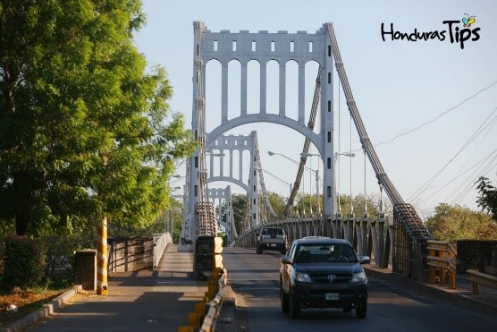
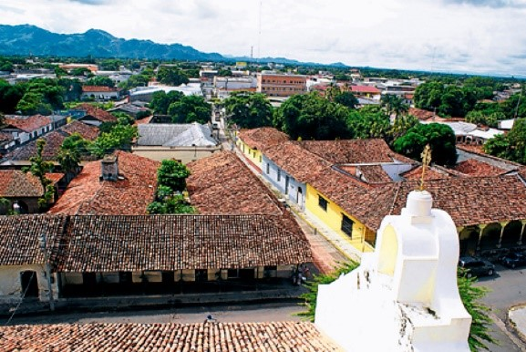

 En el período clásico mesoamericano, los Cholultecas se dedicaron al comercio en un vasto territorio que abarcaba el sur de México, Belice, Guatemala, partes de El Salvador y Nicaragua; en el ejercicio de esta industria llegaron a la Costa Sur de Honduras, y fundaron Choluteca cientos de años antes de la conquista.
 Choluteca fue uno de los siete departamentos originales en que se dividió Honduras tras su independencia, en 1821. Sus fronteras, sin embargo, han cambiado a lo largo de la historia. En 1843 se añadió a su territorio el distrito de Guascorán, hasta entonces parte de Comayagua. En 1893 se desgajó su parte más occidental, con la creación del departamento de Valle.
Choluteca está ubicada en el sur de Honduras, tiene una superficie total de 4360 km..ç2, su población es de aproximadamente de 447.852 habitantes (2015),1 cuenta con muchos terrenos que son utilizados para la agricultura, la pesca, azucareras, camaroneras, etc. La cabecera del departamento es la ciudad de Choluteca, que es cruzada por el río Choluteca que atraviesa el departamento, para llegar a la ciudad se pasa por el Puente de Choluteca.
Limita al norte con los departamentos de Francisco Morazán y El Paraíso al oeste con el Golfo de Fonseca y el departamento de Valle, y al este y sur con la vecina nación de Nicaragua.